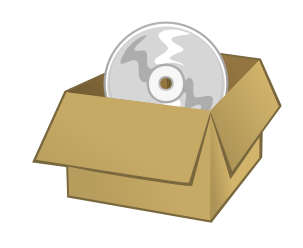

PrOOo-Box
Allgemeine Informationen¶
OpenOffice.org und die PrOOo-Box¶
Das PrOOo-Box-CD bzw. DVD-Image soll den Einsatz von OpenOffice.org durch zahlreiche Erweiterungen vereinfachen und liefert so unter anderem über 900 Vorlagen und Hintergrundbilder sowie alle internationalen Wörterbücher mit. Auch weitere Cliparts, Schriften und Makros sind in dem Paket enthalten. Diese Features lassen sich uneingeschränkt in OpenOffice.org benutzen und erweitern so beide Office Suiten.  Weiterhin enthält die Box das aktuelle OpenOffice.org nicht nur für Linux sondern auch für Mac OS X und Windows. Die mitgelieferten Pakete sind für alle drei Betriebssysteme nutzbar.
Besonders hilfreich sind die enthaltenen Formatvorlagen. Diese kann man natürlich auch einzeln aus dem Internet herunterladen, jedoch muss man sehr lange suchen. Die Formatvorlagen runden OpenOffice.org perfekt ab.
Weitere Informationen und Download Mirror entnimmt man auch auf der PrOOo-Box Website  .
.
Unterschied zwischen der CD und DVD Variante der PrOOo-Box¶
Die PrOOo-Box, eine Sammlung der Büro-Suite OpenOffice.org auf Deutsch, ist erstmals auch als DVD verfügbar . Neben den auch für CD erhältlichen Installationspaketen für Windows, Linux Intel und Mac OS X PPC und anderer Software enthält das DVD-Image Installationspakete für Debian Linux (also auch für (K)ubuntu), FreeBSD 5+6, Mac OS X Intel, Solaris Sparc, Solaris x86 und den Quellcode. Das Software Development Kit für Entwickler steht hier auch für Linux und Solaris bereit.
Hinweis:
Sämtliche aufgezählten Features lassen sich nur einzeln nachinstallieren. Das heißt, es gibt nicht ein großes Paket, sondern 900 einzelne Pakete. Dennoch ist die CD sehr übersichtlich gestaltet und zu jedem mitgeliefertem Paket existiert auch eine Installationsanleitung. Es lohnt sich jedoch, vor einer Installation erst einmal mit Hilfe der Paketverwaltung nach entsprechenden gleichnamigen Paketen zu suchen, da fast alle Pakete auch direkt von der Ubuntu-Distribution unterstützt werden. Diese Pakete sind wesentlich einfacher und schneller zu installieren.
PrOOo-Box installieren¶
OpenOffice.org kann aus den Ubuntu-Quellen und von der CD bzw. der DVD installiert werden. Seit der PrOOo-Box 2.2.1-1 DVD sind allerdings auf der PrOOo-Box DVD auch Metapakete für eine einfache Installation unter Ubuntu enthalten. Eine ausführliche Anleitung für eine Installation dieser Pakete befindet sich auf der DVD.
Für alle anderen Features der PrOOo-Box gilt Folgendes: Man geht nach der äußerst gut dokumentierten Installationsanleitung der CD/DVD vor.
Hinweis:
Unabhängig, ob man die einfache oder schwere Installationsanleitung wählt, muss man folgendes beachten:
Die Vorlagen-Dateien müssen nur in das passende OpenOffice.org bzw. StarOffice-Verzeichnis kopiert werden.
Die Makros sollte man über den Makro-Manager verwalten (näheres ist exzellent auf der CD bzw. der DVD erklärt).
Beschreibung einiger Komponenten¶
Im Artikel OpenOffice.org und LibreOffice-Komponenten bekommt man einen groben Überblick, was auf der CD bzw. der DVD enthalten ist.
OpenOffice.org Offline Dokumentation¶
Das ist eine html-Datei, die eine Dokumentation zu OpenOffice.org darstellt. Es ist eine sehr gute Beschreibung für OpenOffice.org, die sich an Ein- und Umsteiger richtet.
Open 3 Magazin¶
Das Open 3 Magazin ist nichts anderes als das alte OpenOffice.org-Magazin. Man bekommt eine Reihe von Ausgaben als *.pdf- bzw. *.zip-Datei mitgeliefert. Dies sind keine Programme, sondern gute Artikel für Diejenigen, die sich für OpenOffice.org interessieren.
Werbematerialien¶
Das Team von OpenOffice.org hat viele Werbematerialien zusammengestellt. Diese Materialien darf man kopieren, drucken und weitergeben, um für OpenOffice.org Werbung zu machen.
Vorlagen¶
Diese Vorlagen sind betriebssystemunabhängig. Sie sind ganz nützlich und brauchen nur von der CD/DVD auf die Festplatte kopiert zu werden. Wenn man die Dateien daraufhin öffnet, kann man sie direkt in OpenOffice.org bearbeiten. Sämtliche Vorlagen und Cliparts liegen auf der CD/DVD im Ordner templates.
Cliparts¶
Installationsanleitung von der CD/DVD:
Man installiert diese Themendateien, indem man die Inhalte (d.h. die Dateien mit den Endungen *.sdg *.sdv *.thm) nach /user/gallery oder in das vorhandene Unterverzeichnis /share/gallery von OpenOffice.org kopiert. Man beendet den Schnellstarter und startet OpenOffice.org neu. Die Themen stehen danach in der Clipart-Galerie zur Verfügung.
Weitere Cliparts findet man auf openclipart.org  , fr.openoffice.org
, fr.openoffice.org  , theopencd.net , ooextras , ooextras-artwork und xfig2sml zum Herunterladen.
, theopencd.net , ooextras , ooextras-artwork und xfig2sml zum Herunterladen.
Hinweis:
Der bessere Weg: Die hier aufgeführten Cliparts können über die Paketverwaltung installiert werden. Das zu installierende Paket heißt: openclipart
Icons¶
Dies sind nichts anderes als gewöhnliche *.png-Dateien. Sie liegen in /artwork/icons auf der CD/DVD. Man kann diese beliebig in Dokumente von OpenOffice.org einfügen.
Farbpaletten¶
Man speichert die Farbpalette mit der Dateiendung .soc (color.soc) in dem Verzeichnis, welches unter "Extras -> Optionen -> OpenOffice -> Pfade" für "Paletten" eingetragen ist. Man startet OpenOffice.org Draw. Man kann z. B. eine neue Zeichnung anfertigen und dort ein farbiges Objekt (z.B. Rechteck) erzeugen. Man markiert das Objekt durch Klicken mit der Maustaste. Mit der rechten Maustaste öffnet man das zugehörige Kontextmenü. Man wählt den Eintrag "Fläche" (zweiter Eintrag). In dem neuen Menü klickt man auf den Reiter "Farben". Unten rechts ist ein kleiner Ordner abgebildet, auf den man klicken und dann eine Farbpalette (*.soc) auswählen kann. Die Dateien liegen in /artwork/farbpaletten .
Schriften¶
Zusätzliche, freie Schriften können mit FontOOo installiert werden. Einige dieser Fonts sind auf dieser CD/DVD und werden mit dieser "Offline-Version" von FontOOo zur Verfügung gestellt. Eine Installationsanleitung zu FontOOo findet man unter /fonts/doc/fontooo.html auf der CD/DVD. Weitere Schriften findet man unter oppenoffice.org .
OOoWikipedia¶
Das Makro installiert zwei Icons ins Menü. Mit einem Klick startet der Browser und das markierte Wort wird online bei der freien Enzyklopädie Wikipedia.org nachgeschlagen. Aktuelle Version auf oooconv.free.fr . Makros müssen beim Start lediglich akzeptiert werden. Dies ist betriebssystemunabhängig.
extendedPDF¶
Mit Hilfe dieses Makros können aus OpenOffice.org heraus Textdokumente als PDF mit Hyperlinks erzeugt werden. GhostScript wird dabei benötigt. Weitere Hinweise auf der englischen Homepage . Makros müssen beim Start lediglich akzeptiert werden. Dies ist betriebssystemunabhängig.
OpenOffice.org EÜR¶
OpenOffice.org EÜR ist eine einfache Einnahmen-Überschuss-Rechnung für Freiberufler und Selbständige. Ausdruckbare Formulare ermöglichen das Erstellen von quartalsweisen oder monatlichen Umsatzsteuer-Voranmeldungen, für das EÜR-Formular des Finanzamts steht eine Ausfüllhilfe zur Verfügung. Weitere Informationen auf der Homepage .
OOo-Faktura¶
OOo-Faktura, ein Plugin für Fakturierung (Rechnungserstellung) und Buchhaltung - mit "offene Posten"-Verwaltung und Erstellung von Ust.-Voranmeldungen. Weitere Informationen auf der Homepage .
Viele weitere Makros auf der CD/DVD enthalten¶
Diese Auflistung ist nur für den ersten Eindruck eingefügt worden. Es sind wesentlich mehr Pakete auf der CD/DVD enthalten. Weitere Informationen findet man auf der PrOOo-Box Website .
Fazit¶
Die meisten Pakete der CD/DVD kann man problemlos über die Paketverwaltung nachinstallieren, weil sie standardmäßig bei (K)ubuntu enthalten sind. Möchte man jedoch unzählige Vorlagen für OpenOffice.org und StarOffice bekommen, so muss man sie sich entweder mühsam aus dem Internet zusammen suchen oder die CD/DVD runterladen. Desweiteren bietet die CD/DVD eigentlich alles, um Microsoft Office auf Windows bzw. Mac OS X zu ersetzen. Wer also noch Windows benutzen sollte, der findet in der CD/DVD einen ganzen Office-Pool, den er im vollen Umfang unter Windows nutzen kann.
Noch Fragen?¶
Im OpenOffice.org-Portal findet man das Forum für die PrOOo-Box . Dort werden z.B. Erweiterungs- und Verbesserungsvorschläge diskutiert. Fragen zur Installation kann man in diesem Thread stellen, nachdem man die Installationshinweise vom glasen auf der Homepage und diesen Wiki Beitrag gelesen hat.
- Erstellt mit Inyoka
-
 2004 – 2017 ubuntuusers.de • Einige Rechte vorbehalten
2004 – 2017 ubuntuusers.de • Einige Rechte vorbehalten
Lizenz • Kontakt • Datenschutz • Impressum • Serverstatus -
Serverhousing gespendet von